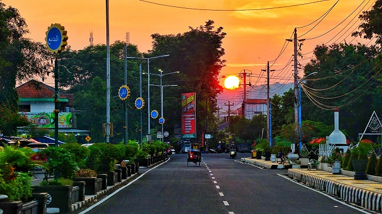

Mau Ekplore Saharian di Pantai Menganti? , Bisa Banget!
2 / 3
Mau Ekplore Saharian di Alun alun Pancasila? , Bisa Banget!
3 / 3
Mau Ekplore Saharian di Geopark Karangsambung? , Bisa Banget!
Pantai MengantiAlun alun PancasilaGeopark Karangsambung
Kebumen
SEMARAK (Sejahtera , Mandiri , Berakhlak , Bersama Rakyat)
Tentang Kebumen

Kota Kebumen berada di daerah paling selatan provinsi Jawa Tengah, gak heran kalau disana terdapat banyak wisata pantai yang unik. Pasalnya, walaupun di daerah pesisir, kota ini ternyata memiliki beberapa daerah pegunungan di pantainya. Salah pantai teruniknya adalah Menganti yang memiliki pasir berwarna putih (jarang-jarang loh ada pasir putih di Jawa Tengah).Selain logat khas ngapaknya, apa aja ya keunikan dari kota kebumen? Yuk, langsung saja lanjut ke daftar berikut ini.
1. Dikenal sebagai kota Walet
2. Penduduk Kebumen baik hati!
3. Kota yang nyaman
4. Sejarah perjuangan Kemit
5. Memiliki destinasi pantai cantik
6. Penghasil genteng Sokka
7. Ora ngapak ora kepenak
Geografis
Kabupaten Kebumen mempunyai wilayah seluas 1.281, 12 km2.[10] Kondisi beberapa wilayah merupakan daerah pantai dan pegunungan, tetapi sebagian besar merupakan dataran rendah.
Dari luas wilayah Kabupaten Kebumen, tercatat 49.768, 00 hektare atau sekitar 31, 04% sebagai lahan sawah dan 108, 343.50 hektare atau 68.96% sebagai lahan kering.
Menurut penggunaannya, sebagian besar lahan sawah beririgasi teknis dan hampir seluruhnya (46, 18%) dapat ditanami dua kali dalam setahun, sebagian lagi berupa sawah tadah hujan (37, 82%) yang di beberapa tempat dapat ditanami dua kali dalam setahun, serta 11, 25% lahan sawah beririgasi setengah teknis dan sederhana.
Lahan kering digunakan untuk bangunan seluas 40.985, 00 hektare (37, 73%), tegalan/kebun seluas 33.777, 00 hektare (33, 57%) serta hutan negara seluas 22.861, 00 hektare (21, 08%) dan sisanya digunakan untuk padang penggembalaan, tambak, kolam, tanaman kayu-kayuan, serta lahan yang sementara tidak diusahakan dan tanah lainnya.
Wisata
Ini dia rekomendasi tempat wisata Kebumen terbaru yang wajib dikunjungi! Di kabupaten ini terdapat banyak wisata alam dengan pemandangan memukau. Kamu bahkan dapat menjumpai pantai yang langsung mengarah ke Samudra Hindia, lho. Selain pantai, Kebumen juga memiliki tempat wisata sejarah dan taman bermain yang tak kalah menarik untuk dijelajahi.
Nah, apabila sedang merencanakan liburan, masukkan Kebumen sebagai salah satu bucket list-mu. Untuk rekomendasi tempat wisata Kebumen, bisa simak dalam beberapa tempat wisata berikut ini:
Pantai Menganti
Pantai Menganti merupakan salah satu destinasi wisata yang ada di Kebumen, Jawa Tengah. Pantai Menganti ini salah satu dari jajaran pantai selatan yang memiliki pemandangan indah.
Pantai Menganti ini terletak di di Desa Karangduwur, Kecamatan Ayah, Kabupaten Kebumen, Jawa Tengah. Pantai yang menyediakan spot untuk berburu sunset dan sunrise ini jadi pilihan wisatawan saat berkunjung ke Kebumen.
Alun alun Pancasila
Alun-alun Kebumen bernama Alun-alun Pancasila itu ditujukan menjadi lokasi wisata kota, dan tempat santai dengan berbagai sarana yang ramah anak dan disabilitas.
Geopark Karangsambung
Menjelajahi Geopark Karangsambung-Karangbolong di Kebumen, Jawa Tengah serasa menjelajahi dasar samudra tempat terbentuknya Pulau Jawa.